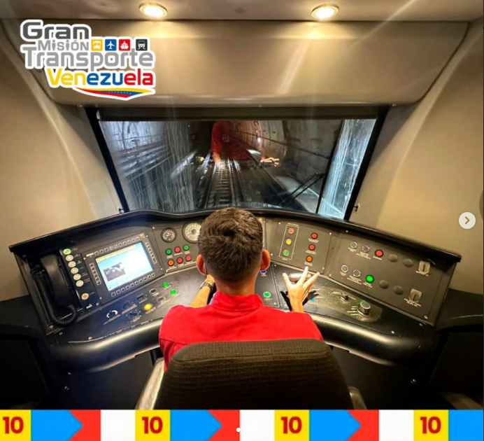
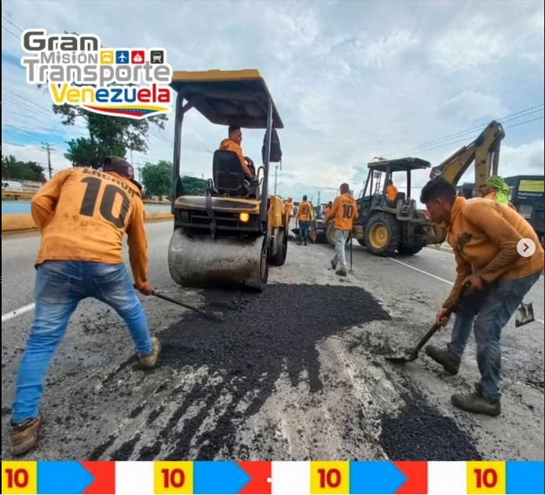
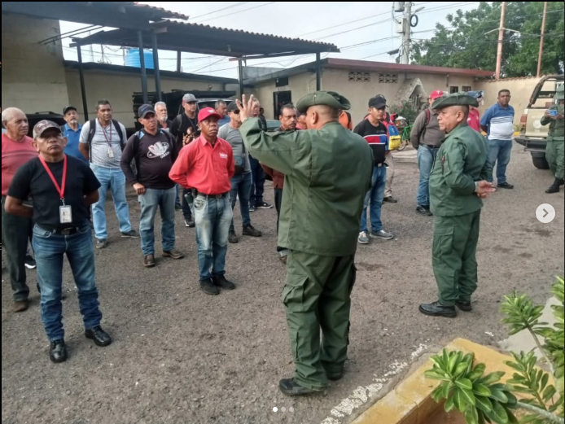
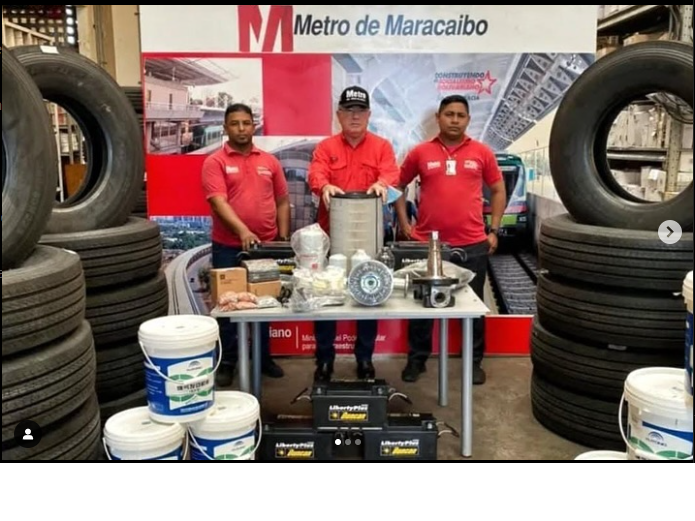
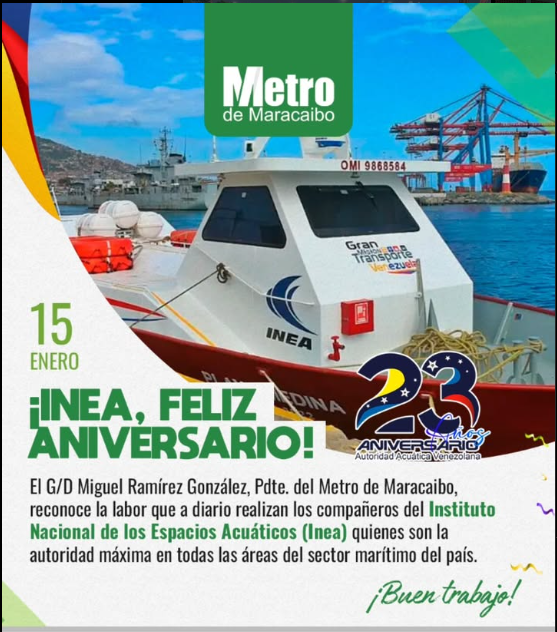
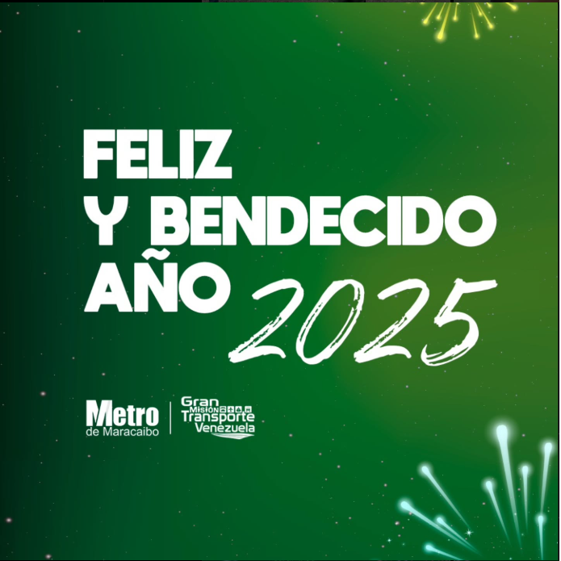
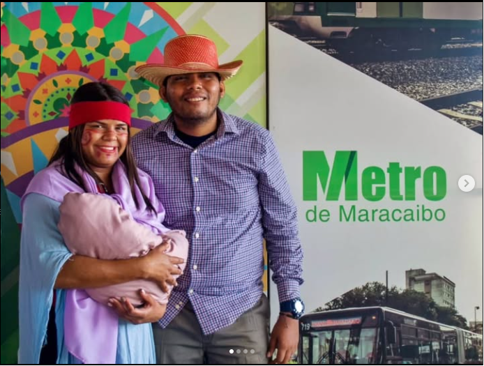

NOTICIAS

¡Este 10 de enero, el pueblo venezolano se une en un solo corazón para apoyar a nuestro presidente electo, Nicolas Maduro!.

El camino hacia la prosperidad está trazado y tenemos un líder que nos guía.

Cuerpo Combatiente del Metro de Maracaibo participó en entrenamiento táctico.

¡Arrancamos el 2025 en Victoria! Garantizando la movilidad de usuarios en la región!.
Miguel Ramírez, presidente del Metro de Maracaibo junto con los trabajadores de esta Empresa Socialista, repudiamos toda sanción criminal impuesta por el Gobierno saliente del imperio Norteamericano.

Miguel Ramírez González, presidente del Metro de Maracaibo, felicita al Instituto Nacional de los espacios Acuáticos por estos 23 años de esfuerzo.

Que cada día del 2025 les traiga una nueva razón para sonreír y agradecer. ¡El mejor año está por venir!.

Entre risas, música y pesebres los marabinos disfrutan de este momento festivo en familia, en plazas, parques y hasta en las estaciones del Metro de Maracaibo.